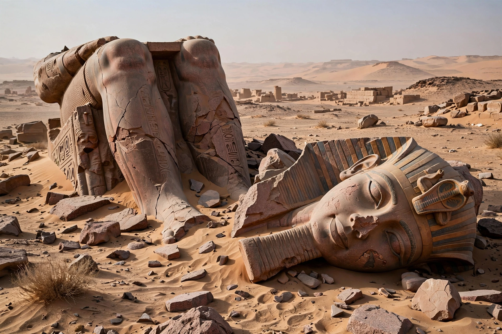

Ozymandias

"Ozymandias" is a sonnet by the English Romantic poet Percy Bysshe Shelley, written in 1817 and first published in The Examiner on 11 January 1818. One of Shelley's most famous short works, it reflects on the transience of power and the ruin of empires, taking as its subject a broken statue of the Egyptian pharaoh Ramesses II — "Ozymandias" being the Greek form of part of his throne name.
The poem
I met a traveller from an antique land,
Who said — "Two vast and trunkless legs of stone
Stand in the desert. . . . Near them, on the sand,
Half sunk a shattered visage lies, whose frown,
And wrinkled lip, and sneer of cold command,
Tell that its sculptor well those passions read
Which yet survive, stamped on these lifeless things,
The hand that mocked them, and the heart that fed;
And on the pedestal, these words appear:
My name is Ozymandias, King of Kings;
Look on my Works, ye Mighty, and despair!
Nothing beside remains. Round the decay
Of that colossal Wreck, boundless and bare
The lone and level sands stretch far away."
Composition and context
Shelley wrote the poem in a friendly sonnet competition with Horace Smith, prompted by news that the British Museum had acquired the "Younger Memnon," a massive fragment of a statue of Ramesses II from Thebes. Shelley also drew on the classical historian Diodorus Siculus, who recorded an inscription on the tomb of Ozymandias: "I am Ozymandias, king of kings; if any would know how great I am, let him surpass my works."
Themes and legacy
The sonnet is a meditation on hubris: the boast on the pedestal is ironised by the surrounding desolation, and the sculptor's art — which captures the tyrant's arrogance — outlasts the power it served. The poem's nested narration (speaker, traveller, inscription) distances and frames the pharaoh's claim. "Ozymandias" has become a byword for fallen grandeur, frequently quoted in political commentary and popular culture; it supplied the title of a celebrated episode of the television series Breaking Bad, in which Bryan Cranston also recorded a reading of the poem.